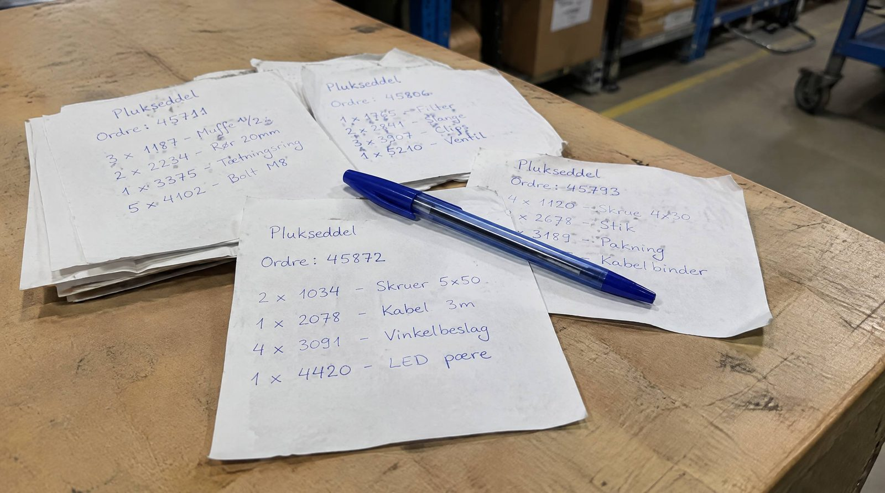

Der findes ikke et ordretal hvor et lagersystem pludselig giver mening.
Vi har kunder der kan mærke forskellen ved 200 pakker om måneden. Og vi har talt med webshops der sender 1.000 ordrer om dagen og ikke kan se hvad de skulle bruge det til.
Forskellen er ikke volumen. Det er hvad der er i ordrerne, og hvor mange der skal vide det samme.
Hvad er et WMS?
Et WMS, eller lagersystem, styrer det fysiske på lageret: modtagelse, placering, pluk, pakning og forsendelse.
Forskellen på det og et ERP er enkel. Et lagersystem ved hvor varen står, hvem der plukkede den, og hvilken vej der er kortest. Et ERP ved at du solgte den.
👉 Skalerer din webshop? Se hvordan SmartPack understøtter vækst
Hvorfor ordretallet ikke afgør det
Ordrer per dag er nemt at måle, og derfor er det det alle spørger om. Men to webshops med 100 ordrer om dagen kan have vidt forskellige lagre.
Den ene sælger fem varenumre i store kasser. Én person kender hele lageret udenad, og fejlene er så sjældne at ingen taler om dem. Den anden sælger tøj i otte størrelser og seks farver, har tre der pakker, og to af dem startede i sidste måned.
Den første har ikke brug for et system. Den anden havde brug for det for et halvt år siden. Samme ordretal.
De fire ting der faktisk afgør det
Varianter. Samme vare i flere størrelser eller farver, der ligner hinanden på hylden. Det er den enkeltstående største kilde til fejlpluk, og det er den hukommelsen er dårligst til.
Flere om at pakke. Så snart to personer skal vide det samme, holder hukommelsen op med at være et system. Den ene ved hvor varen blev flyttet hen. Den anden gør ikke.
Folk der ikke kender lageret. Vikarer, nyansatte, sæsonhjælp. Hvis en ny skal gå rundt med en erfaren i to uger, før hun kan noget, betaler I to lønninger for ét stykke arbejde.
Udsving. Kan I klare en almindelig tirsdag, men ikke en kampagne, er det ikke bemandingen der er problemet. Det er at der ikke er noget der prioriterer, når der er kø.
Rammer én af dem, er det værd at regne på. Rammer to, regner I sandsynligvis allerede for sent.
Regn på det i stedet for at vente på et tal
Her er den korteste måde at finde ud af det på.
SmartPacks minimumsafregning er 3.000 kr. om måneden. Den står på prissiden, og den er der uanset hvor lidt I sender.
En time på lageret koster cirka 300 kr., alt medregnet. Så skal systemet spare knap ti timer om måneden for at gå lige op. Fordelt på tyve arbejdsdage er det en halv time om dagen.
Regnet på fejl i stedet: en pakkefejl koster omkring 350 kr. i returporto, ny forsendelse, emballage, kundeservice og lagertid. Så er det knap ni fejl om måneden.
Det er hele regnestykket. Sparer I en halv time om dagen, eller ni fejl om måneden, er minimumsafregningen tjent hjem. Alt derover er gevinst.
Det er også derfor svaret ikke er et ordretal. Ti timer om måneden kan ligge i 80 ordrer med varianter lige så vel som i 400 ordrer med ét varenummer.
Sådan finder I jeres eget tal
- Mål en dag. Hvor lang tid går der fra ordren er klar til pakken er lukket? Tag et gennemsnit over en uge, ikke over en dag
- Tæl fejlene. Hvor mange pakker kom retur sidste måned, fordi der var noget galt med dem? Ikke fortrudte køb, kun fejl
- Spørg den nyeste. Hvor længe gik der, før hun kunne pakke alene? Det tal er oplæringsomkostningen, og den kommer igen hver gang I ansætter
Tre tal, en formiddags arbejde. Så ved I det, i stedet for at bruge nogen andres grænse.
Hvornår SmartPack ikke er svaret
Der er tilfælde hvor I skal lade være, og de handler heller ikke om volumen.
Ensartede varer og én person. Få varenumre uden varianter, én der pakker og kender hele lageret. Der er ikke noget for systemet at holde styr på som hovedet ikke allerede gør gratis.
Processen er problemet. Scanner I ikke ved modtagelse, og ved I ikke hvad der står hvor, så løser et system det ikke. Det gør det synligt, hvilket er en start, men ryd op først og køb bagefter.
I leder efter et regnskabssystem. Et lagersystem styrer lageret og flowet omkring det, ikke bogholderiet.
Alternativet koster mindre end 3.000 kr. om måneden. Hvis et regneark og en fast rutine faktisk holder, og ingen bruger tid på at rette op bagefter, så holder det. Så længe det varer.
Typiske fejl
At vente på et tal. "Vi tager det når vi rammer 300." Så rammer I 300 i den travleste uge på året, og skal i gang med noget nyt samtidig. Det er den dyreste rækkefølge.
At vælge for stort. Et system til koncerner tager måneder at sætte op og har to hundrede funktioner I aldrig åbner. Regn på hvad opsætningen koster i jeres egen tid, ikke kun hvad licensen koster.
At vælge uden dem der plukker. Systemet bruges af dem der står på gulvet. Sæt to af dem til at prøve det i tre dage, før I skriver under.
Hvad det tager at komme i gang
Hos os er opsætningen cirka syv arbejdsdages arbejde, fordelt over en periode. Det er arbejdstid, ikke kalendertid, og noget af den ligger hos jer.
Det vigtigste er at lægge den et sted hvor I har luft. Ikke i ugerne op til jeres travleste periode.